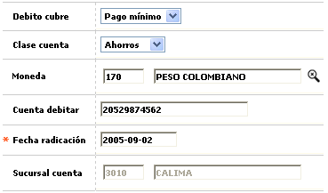

Novedad cuenta debitar |
En este formulario invocado desde la opción ingreso de novedades, (issuer) se permite a la entidad asociar o modificar la cuenta corriente o de ahorros registrada por el cliente para efectuarle el débito automática y cubrir el pago mínimo o el pago total de la tarjeta de crédito.

Descripción de campos
Débito cubre |
Campo tipo combo en el que se selecciona entre Pago mínimo o Pago total el valor que se debe enviar para el débito automático. |
Clase cuenta |
En este campo tipo combo se selecciona entre Ahorros, Corriente o Rotativo la clase de cuenta que se desea registrar para el débito automático. |
Moneda |
Campo con lista de valores de la cual se puede seleccionar la Moneda en la cual se encuentra denominada la cuenta para el débito. |
Cuenta debitar |
En este campo se registra el número de cuenta que el cliente desea registrar para que se le efectúe el débito automático. |
Fecha de radicación |
Campo obligatorio en el que se registra en formato YYYY-MM-DD la fecha en la cual se solicitó el cambio o adición de la cuenta a debitar y que puede ser una fecha anterior a la actual del sistema, facilitando el ingreso de novedades de fechas anteriores. |
Sucursal cuenta |
En este campo con lista de valores se puede seleccionar la sucursal a la cual pertenece la cuenta que se está registrando para débito automático. |